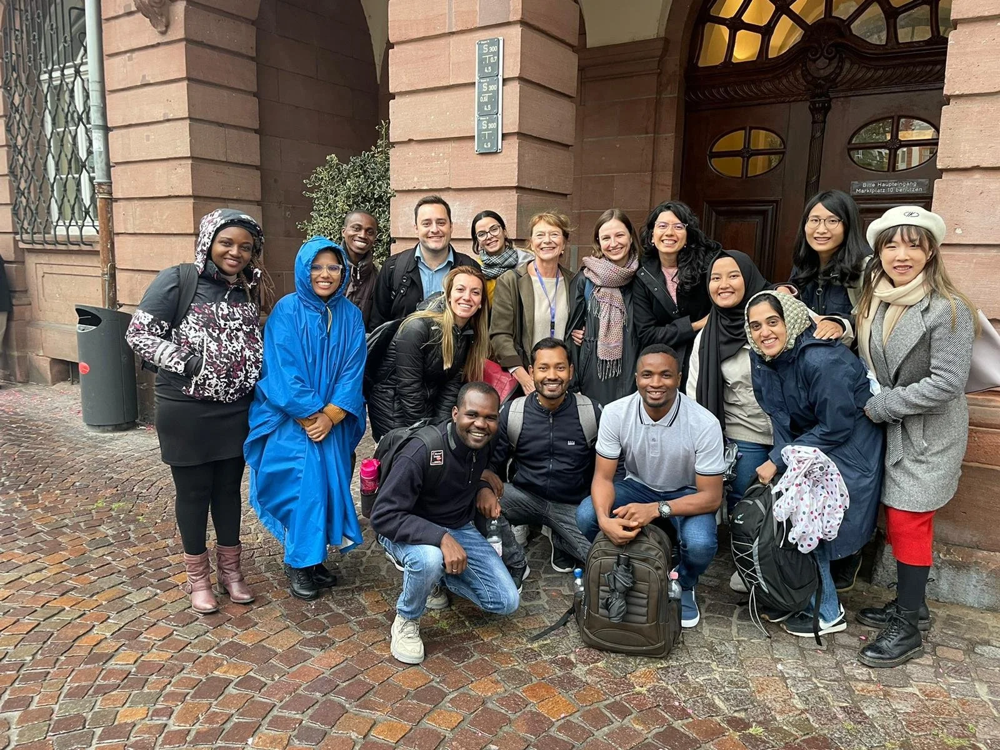
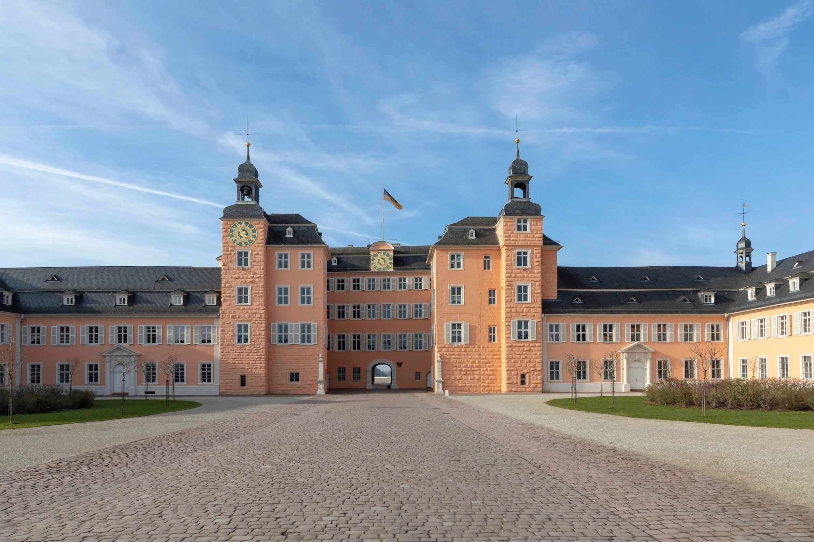
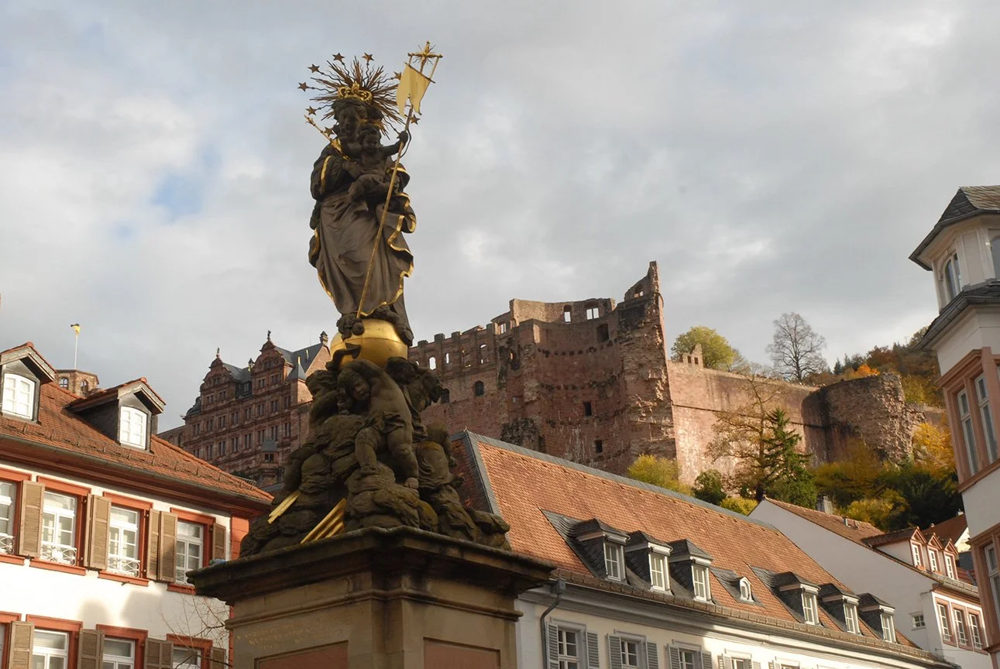
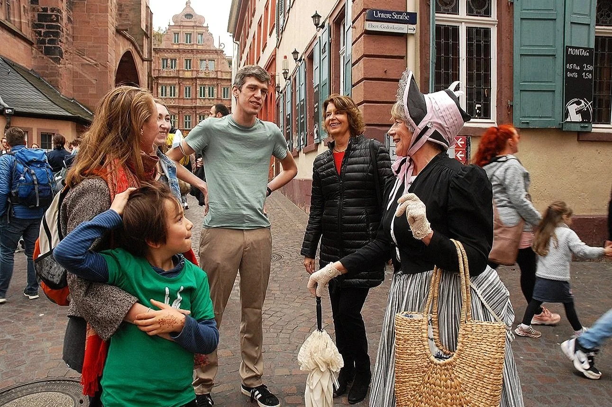

Our Tours
Möchten Sie Einblick in die bewegte und bewegende Geschichte der Kurpfalz sowie die kulturelle Vielfalt dieser Region?
Heidelberg
Für Schlossfanatiker.
Das Heidelberger Schloss.
Wussten Sie, dass es eine bezaubernde englische Prinzessin war, die den repräsentativen Umbau des Heidelberger Schlosses „verursachte“? Und nur wenig später, eine deutsche Prinzessin seine Zerstörung nicht verhindern konnte? Seit über 300 Jahren zieht die Ruine des Heidelberger Schlosses Besucher in seinen Bann. Interessant und kurzweilig lassen wir die bewegte Vergangenheit der imposanten Ruine wieder aufleben.
Dauer: 90 Minuten
Preis: EUR 130 (Gruppe bis 15 Personen) plus Schlosshofeintritt
Book nowFür Altstadtgänger.
Die Heidelberger Altstadt.
Die Heidelberger Altstadt besitzt einen einzigartigen Charme. Schriftsteller wie Johann Wolfgang von Goethe, Marc Twain oder Victor Hugo waren von dem besonderen Reiz der Stadt fasziniert. Entdecken Sie das romantische Heidelberg mit der schönsten Schlossruine der Welt. Lassen Sie sich bei einem Rundgang durch die engen mittelalterlichen Gassen in eine längst vergangene Zeit entführen.
Dauer: 90 Minuten
Preis: EUR 130 (Gruppe bis 15 Personen)
Book nowSchwetzingen
Für Romantiker.
Der Philosophenweg.
Der Philosophenweg zählt zu den schönsten Panoramawegen Deutschlands. Ist man erst einmal dort oben angekommen, wird man für die Mühe belohnt. Es eröffnet sich dem Besucher ein herrlicher Blick auf die malerische Heidelberger Altstadt und das Neckartal. Gemütlich schlendernd erfahren Sie Interessantes über die Geschichte der Stadt, die Universität, unglücklich verliebte Studenten und wilde Räubergesellen.
Dauer: 120 Minuten
Preis: EUR 140 bis 15 Personen
Book now
Für Gartenfreunde.
Der Schwetzinger Schlosspark.
Vom Garten der Allegorien bis zum Garten der Vernunft – lassen Sie sich in die Wunderwelt eines der best erhaltendsten barocken Gärten des 18. Jahrhunderts entführen! Schwetzingen war Sommerresidenz der Kurfürsten der Pfalz und erlebte unter Carl Theodor seine Glanzzeit.
Dauer: 90 Minuten
Preis: EUR 130 (Gruppe bis 15 Personen)
Book nowMannheim

Für Schlossfantiker Teil II.
Das Schwetzinger Schloss.
Wasserburg, Jagdschloss, Sommerresidenz der Kurfürsten der Pfalz – das Schwetzinger Schloss in seiner wunderschönen Gartenumgebung. Sie erleben Einblicke in das tägliche Leben im 18. Jahrhunderts unter Carl Theodor, dem Förderer der Wissenschaften, der Musik sowie Anhänger der Aufklärung. Lassen Sie sich entführen auf den Spuren von Besuchern wie Mozart und Voltaire.
Dauer: 60 Minuten
Preis: EUR 120 (Gruppe bis 15 Personen)
Book nowSpeyer
Für Barocker.
Das Barockschloss Mannheim.
Nach Zerstörung von Heidelberg einst bedeutende Hauptresidenz und Musenhof der Kurfürsten der Pfalz, zweitgrößtes Barockschloss in Europa, beherbergt heute teilweise die Universität Mannheim. Lassen Sie sich verzaubern von der Geschichte der Adoptivtochter Napoleons, Stephanie de Beauharnais, sowie den prunkvoll möblierten Sälen des Schlosses.
Dauer: 60 Minuten
Preis: EUR 120 (Gruppe bis 15 Personen)
Book nowKostümführungen

Für Dombewunderer.
Der Speyerer Stadtspaziergang.
Speyer, einst herrschaftlicher Sitz deutscher Kaiser, ist in der Nähe der zweitgrößten Weinanbauregion Deutschlands gelegen. Erleben Sie Kaiserdom (UNESCO-Weltkulturerbe) mittelalterlichen Judenhof, als Teil der SchUM-Stätten ebenfalls UNESCO Weltkulturerbe, barocke Dreifaltigkeitskirche sowie lebhafte Promenaden mit Einblick in die Pfälzer Kultur.
Dauer: 90 Minuten
Preis: EUR 130 (Gruppe bis 15 Personen)
Book now
Für Schauspielfreunde.
Bei unseren Kostümführungen plaudern Zeitzeugen über sich und das Jahrhundert in das sie hineingeboren wurden. Nymphe de la Motte zum Beispiel, die eingebildete Hofdame der Kurfürstin Sophie von Hannover, der Lieblingstante Liselottes von der Pfalz oder Marie Luise von Lengefeldt, eine äußerst mitteilsame Gouvernante im Haushalt des berühmten Heidelberger Historikers und Universitätsprofessors Friedrich Christoph Schlosser.
Weitere Rollen auf Nachfrage.
Dauer: 90 Minuten
Preis: EUR 170 (Gruppe bis 15 Personen)
Book now